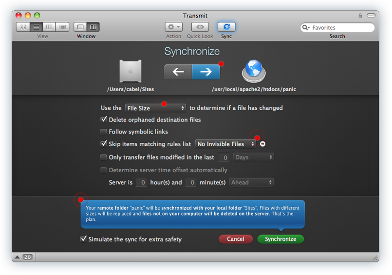
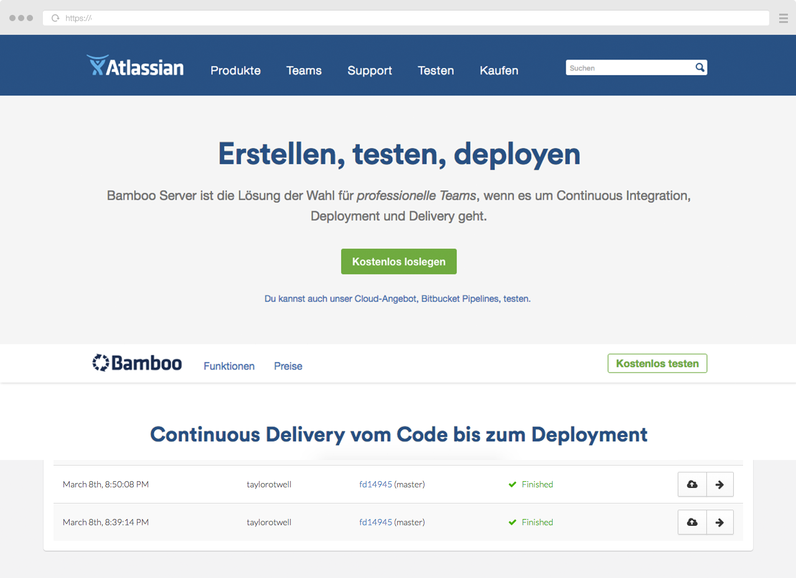

Deployment
state of the art
#wcber #dollertyp #DevOps #WordPress
Hallo, mein Name ist
René Reimann @DerPixler
- WordPress Fanboy seit 2006
- Mediengestalter für Digital- & Printmedien
- Senior Fullstack Web Developer
- Podcaster - wp-sofa.de
Was werde ich jetzt erzählen
- Definition Deployment
- Einfaches Deployment
- Automatisches Deployment
- Deployment Workflows
- Deployment Arichtekturen
Deployment = Verteilen
Etwas verteilen, Dinge gleicher oder ähnlicher Art an mehrere Ziele austeilen.
Wie wir Dinge verteilen?
Drag & Drop uploads
Drop your stuff here!
Manuelle uploads
FTP & Co.
| Local | Remote |
|
drwxr-xr-x .
drwxr-xr-x ..
drwxr-xr-x index.html
|
drag your file here! |
Via Commandline (CLI)
SFTP - Secure File Transfer Protocol
sftp -P 42022 ~/development/db_dump rene.reimann@10.111.26.61:/home/dev_db_sync/db_dump/cts_seo.sqlSCP - Secure Copy
scp -P 42022 ~/development/db_dump rene.reimann@10.111.26.61:/home/dev_db_sync/db_dump/cts_seo.sqlDeployment like a Pro
Deployment Möglichkeiten
easy
semieasy
fullstack
Deployment easy
FTP-Programme mit Sync-Function: Transmit (mac)
Commandline Tools: rsync
$ rsync -a -e ssh root@192.168.0.100:/folder1/ /folder2/Vorteile
- Sehr einfach in der Hanhabung
- Keine tiefergehendes Wissen nötig.
Nachteile
- Wenig Kontrolle
- Rollback kompliziert
- Fehlerquote hoch
Deployment semieasy
Vorbereitung: mit Composer Projekte bauen
{
{
"name": "WordPress Playground",
"description": "Build a WordPress Project",
"license": "GPL-3.0+",
"homepage": "https://github.com/derpixler/Deployment-state-of-the-art",
"authors": [ {
"name": "Rene Reimann",
"homepage": "http://rene-reimann.de",
"email": "info@rene-reimann.de",
"role": "Developer"
} ],
"repositories": [ {
"type": "composer",
"url": "https://wpackagist.org"
} ],
"require": {
"php": ">=5.3.0",
"johnpbloch/wordpress-core-installer": "~0.2",
"johnpbloch/wordpress-core": "4.*",
"wpackagist-plugin/stream": "3.2.0",
"wpackagist-plugin/backwpup": "3.3.*"
},
"extra": {
"wordpress-install-dir": "html/wp-core",
"installer-paths": {
"html/wp-content/plugins/{$name}/": ["type:wordpress-plugin"],
"html/wp-content/themes/{$name}/": ["type:wordpress-theme"]
}
},
"scripts" : {
"post-install-cmd": "./prepare.sh",
"post-update-cmd": "./prepare.sh"
}
}
}
{
"name": "WordPress Playground",
"description": "Build a WordPress Project",
"license": "GPL-3.0+",
"homepage": "https://github.com/derpixler/Deployment-state-of-the-art",
"authors": [ {
"name": "Rene Reimann",
"homepage": "http://rene-reimann.de",
"email": "info@rene-reimann.de",
"role": "Developer"
} ],
"repositories": [ {
"type": "composer",
"url": "https://wpackagist.org"
} ],
"require-dev": {
"wpackagist-plugin/stream": "3.2.0"
},
"require": {
"johnpbloch/wordpress-core-installer": "~0.2",
"johnpbloch/wordpress-core": "4.*",
"wpackagist-plugin/stream": "3.2.0",
"wpackagist-plugin/backwpup": "3.3.*"
},
"extra": {
"wordpress-install-dir": "html/wp-core",
"installer-paths": {
"html/wp-content/plugins/{$name}/": ["type:wordpress-plugin"],
"html/wp-content/themes/{$name}/": ["type:wordpress-theme"]
}
},
"scripts" : {
"post-install-cmd": "./prepare.sh",
"post-update-cmd": "./prepare.sh"
}
Projekt mit Composer installieren & aktualisieren
Last login: Sat May 13 12:20:04 on wcber13052017 rener$@local:~ $ ssh rene@123.456.78.910 rene@server: $ cd /var/www/ rene@server: $ git clone https://github.com/...easy-wordpress.. rene@server: $ composer install Loading composer repositories with package information Updating dependencies (including require-dev) - Installing composer/installers (v1.3.0) Loading from cache - Installing johnpbloch/wordpress-core-installer (0.2.1) Loading from cache - Installing johnpbloch/wordpress-core (4.7.4.1) Cloning b58505c58043c5e569b5d119878f8e8c1d5f51e4 - Installing wpackagist-plugin/stream (3.2.0) Downloading: 100% - Installing wpackagist-plugin/backwpup (3.3.7) Loading from cache
Writing lock file Generating autoload files > ./prepare.sh - Copy wp-config.php.dist -> vagrant/html/wp-config.php Files copied
https://github.com/derpixler/easy-wordpress-composer-install
Die Installation
-rw-r--r--@ 1 renereimann staff 946 13 Mai 12:52 composer.json -rw-r--r-- 1 renereimann staff 8617 13 Mai 12:43 composer.lock -rwxr-xr-x@ 1 renereimann staff 553 13 Mai 12:42 prepare.sh -rw-r--r--@ 1 renereimann staff 2919 13 Mai 12:50 wp-config.php.dist drwxr-xr-x 5 renereimann staff 170 13 Mai 12:43 html drwxr-xr-x 5 renereimann staff 170 13 Mai 12:43 vendor -rw-r--r--@ 1 renereimann staff 2853 13 Mai 06:43 wp-config.php drwxr-xr-x 3 renereimann staff 102 13 Mai 06:43 wp-content drwxr-xr-x 22 renereimann staff 748 13 Mai 06:43 wp-core
Vorteile
- Volle Kontrolle über Änderungen
- Entwickler haben gleiche Versionen
- Code kann verisoniert werden
- Composer kann Builds & Tests ausführen
Nachteile
- Login auf dem Ziel Server nötig
- Kein Rollback
Deployment full Stack
Mit Deployment Tools
- Remote
- Bessere Rechteverwaltung
- Deploys werden Versioniert
- Rollback
- Continuous Integration
- Staging
https://envoyer.io

https://de.atlassian.com/software/bamboo
https://deployer.org
Deployer — Deployment tool for PHP
- Kostenlos
- läuft lokal
- Rezeptbasierend
- Einfach
Lasst uns etwas deployen
dep deploy
Last login: Sat May 13 12:23:04 on wcber13052017 renereimann$@wcber:~ $ ✔ Executing task deploy:prepare ✔ Executing task deploy:lock ✔ Executing task deploy:backup_db ✔ Executing task deploy:unittests ✔ Executing task deploy:release ✔ Executing task deploy:update_code ✔ Executing task deploy:gulp ✔ Executing task deploy:shared ✔ Executing task deploy:vendors ✔ Executing task deploy:migrate ✔ Executing task deploy:warmup ✔ Executing task deploy:symlink ✔ Executing task deploy:update_wp_config ✔ Executing task deploy:update_plugins_themes ✔ Executing task deploy:unlock ✔ Executing task cleanup Successfully deployed!
Deploy auf einen Teststage
$ dep deploy testDeploy auf einen Production
$ dep deploy productionWie Funktioniert das?
Die deployer.php
namespace Deployer;
require 'recipe/common.php';
// Configuration
set('default_stage', 'test');
set('repository', 'git@github.com:derpixler/easy-wordpress-composer-install.git');
server('production', 'p366988.mittwaldserver.info')
->user('p36698')
->identityFile('~/.ssh/deployer_id_rsa.pub', '~/.ssh/deployer_id_rsa', '')
->set('deploy_path', '/home/www/p366988/deployment')
->set('base_path', '/home/www/p366984')
->set('sudo', FALSE)
->set('stage', 'preview' )
->set('DB_HOST', 'db4686.mydbserver.com' )
->set('DB_USERNAME', 'p366988' )
->set('DB_PASSWORD', 'usr_p366988_2' )
->set('DB_DATABASE', 'Zhivimaq%960' );
server('test', '149.58.155.192')
->user('p36698')
->identityFile('~/.ssh/deployer_id_rsa.pub', '~/.ssh/deployer_id_rsa', '')
->set('deploy_path', '/var/www/deployment')
->set('base_path', '/var/www/')
->set('sudo', TRUE)
->set('stage', 'test' )
->set('DB_HOST', 'localhost' )
->set('DB_USERNAME', 'wordpress' )
->set('DB_PASSWORD', 'IKiu2eiqu1shahghievoo9teidoc5ipp' )
->set('DB_DATABASE', 'wordpress' );
desc('Deploy your project');
task('deploy', [
'deploy:start_info',
'deploy:prepare',
'deploy:lock',
'deploy:backup_db',
'deploy:release',
'deploy:update_code',
'deploy:shared',
'deploy:writable',
'deploy:vendors',
'deploy:symlink',
'deploy:clear_paths',
'deploy:unlock',
'cleanup',
'success'
]);
after('deploy', 'success');
Eigne Rezepte (tasks)
/**
* Backup DB before deploy
*
* @siince 13.05.2017
*/
desc('Backup DB');
task('deploy:backup_db', function() {
$link = run("readlink {{deploy_path}}/current")->toString();
$currentRelease = substr($link, 0, 1) === '/' ? $link : get('deploy_path') . '/' . $link;
$backup_dir = get('deploy_path') . '_db_backup';
// Create the backup dir if it doesn't exist
run( sprintf("if [ ! -d %s ]; then mkdir -p %s; fi", $backup_dir, $backup_dir ) );
run(sprintf(
'mysqldump -h%s -u%s -p%s %s | gzip > %s/%s.sql.gz',
get('DB_HOST'),
get('DB_USERNAME'),
get('DB_PASSWORD'),
get('DB_DATABASE'),
$backup_dir,
basename( $currentRelease )
));
});
Eigne Rezepte (tasks)
/**
* restore last DB Backup after rollback
*
* @siince 13.05.2017
*/
desc('Rollback Deploy');
task('rollback', function() {
$releases = get('releases_list');
if (isset($releases[1])) {
$releaseDir = "{{deploy_path}}/releases/{$releases[1]}";
// Symlink to old release.
run("cd {{deploy_path}} && {{bin/symlink}} $releaseDir current");
// Remove release
run("rm -rf {{deploy_path}}/releases/{$releases[0]}");
$link = run("readlink {{deploy_path}}/current")->toString();
$currentRelease = substr($link, 0, 1) === '/' ? $link : get('deploy_path') . '/' . $link;
$backup_dir = get('deploy_path') . 'db_backup';
run(sprintf(
'gunzip < %s/%s.sql.gz | mysql -h%s -u%s -p%s %s',
$backup_dir,
basename( $currentRelease ),
get('DB_HOST'),
get('DB_USERNAME'),
get('DB_PASSWORD'),
get('DB_DATABASE')
));
writeln("Rollback to `{$releases[1]}` release was successful.");
} else {
writeln("No more releases you can revert to. ");
}
} );
Fagen?
Session Notes
https://github.com/derpixler/Deployment-state-of-the-art
https://github.com/derpixler/easy-wordpress-composer-install
www.rene-reimann.de
https://twitter.com/DerPixler @DerPixler
https://www.instagram.com/rene_reimann
https://github.com/derpixler
info@rene-reimann.de